Como inserir a assinatura de e-mail
no Outlook
Configure sua assinatura corporativa no Outlook Classic e no Novo Outlook.
Este guia detalha os passos para configurar sua assinatura de e-mail corporativa no Outlook. O tutorial cobre tanto o Outlook Classic (versão desktop tradicional) quanto o Novo Outlook. Antes de iniciar, certifique-se de que o arquivo de imagem da sua assinatura já foi criado.
Abrir o Outlook Classic
Após ter realizado a criação da imagem da sua assinatura, abra o Outlook Classic e localize a barra de pesquisa na parte superior.
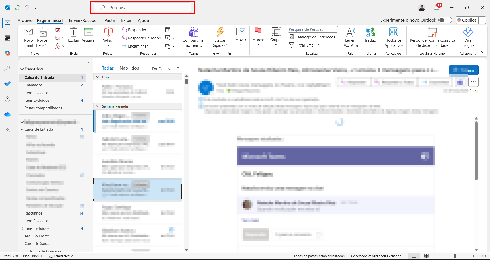
Pesquisar por "Assinatura"
Na barra de pesquisa, digite "assinatura" para localizar a opção de configuração.
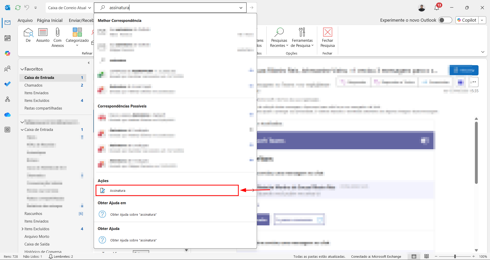
Abrir as configurações de Assinatura
Nos resultados da pesquisa, clique em "Assinaturas..." para abrir a janela de configuração.
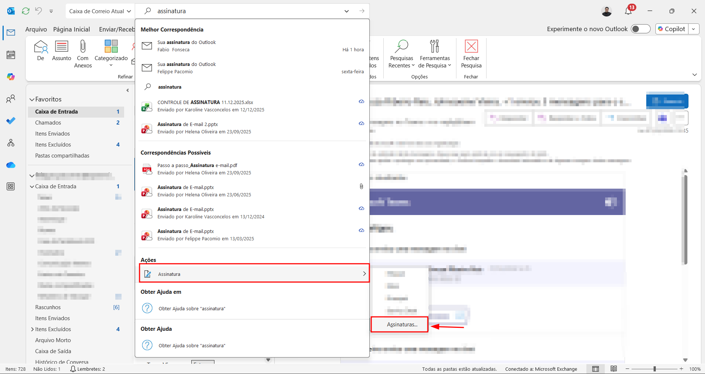
Criar uma nova assinatura
Na janela de Assinaturas, clique em "Novo" para criar uma nova assinatura.
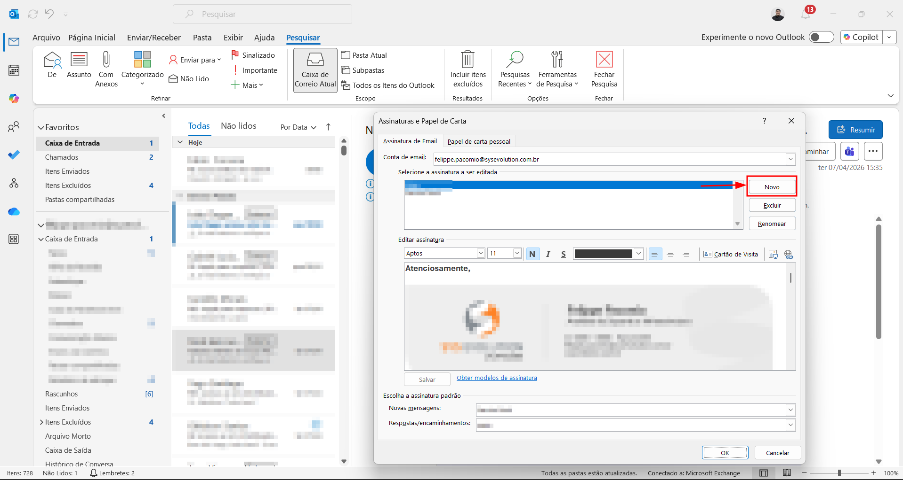
Dar um nome à assinatura
Digite um nome para identificar sua assinatura e confirme.
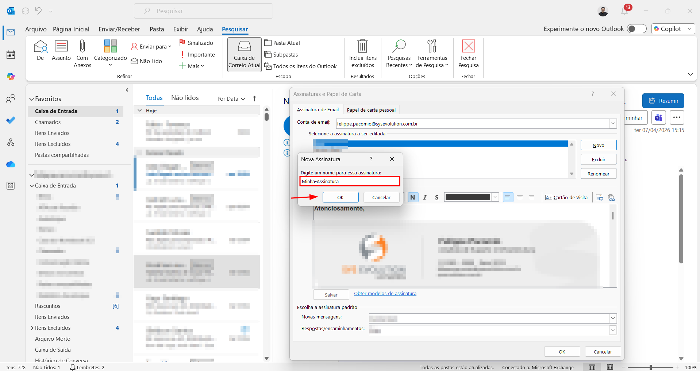
Inserir a imagem da assinatura
No editor de assinatura, clique sobre o ícone de inserir imagem (conforme indicado na imagem) para adicionar o arquivo da sua assinatura.
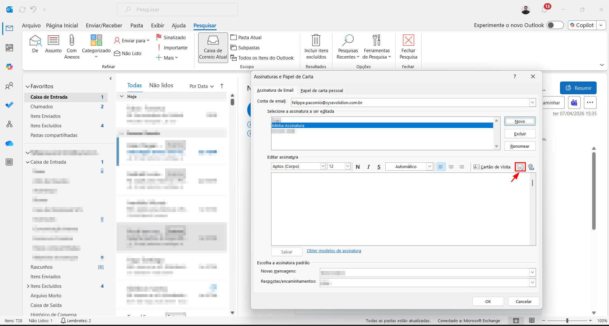
Selecionar o arquivo da assinatura
Localize e selecione o arquivo de imagem da sua assinatura e clique em "Inserir".
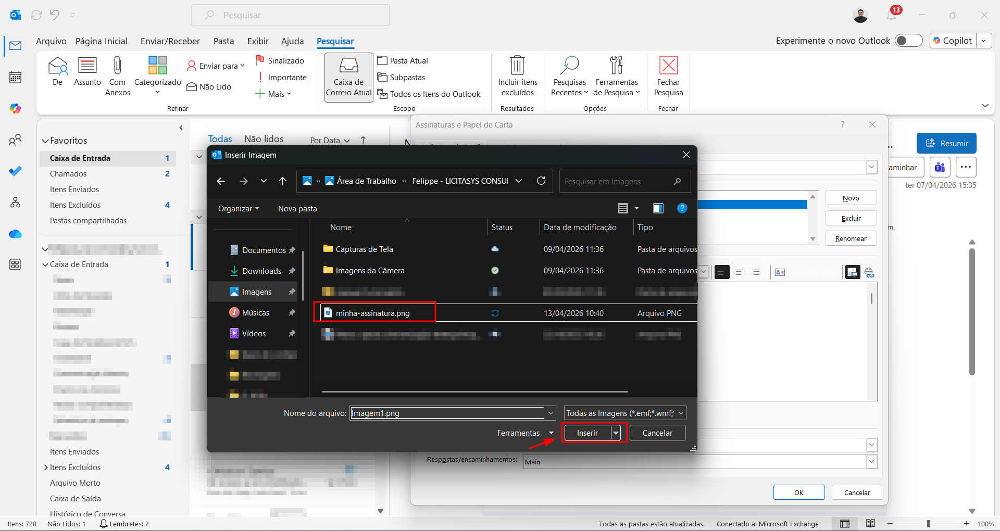
Verificar a assinatura
A imagem da assinatura deve aparecer no campo de edição conforme a imagem abaixo.
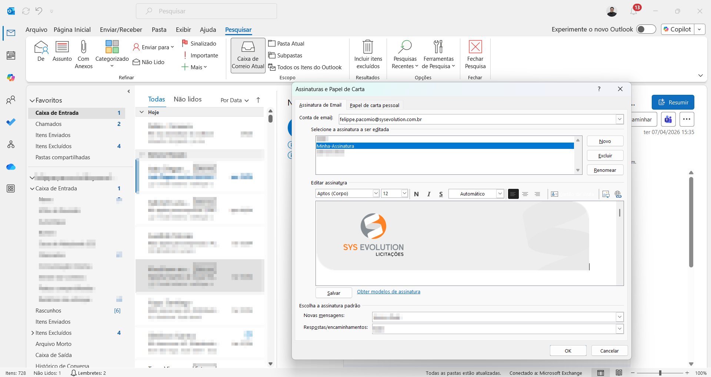
Inserir o aviso legal
Abaixo da imagem da assinatura, cole o texto contendo o aviso legal com a seguinte formatação:
• Fonte: Aptos
• Cor: Cinza escuro
• Tamanho: 9
• Estilo: Itálico
• Alinhamento: Esquerda
AVISO LEGAL
Esta mensagem e seus anexos são destinados exclusivamente ao(s) destinatário(s) identificado(s) acima e contêm informações confidenciais ou privilegiadas. Se você não é o destinatário destes materiais, não está autorizado a utilizá-los para nenhum fim. Solicitamos que você apague a mensagem e seus anexos e avise imediatamente o remetente. O conteúdo desta mensagem e de seus anexos não representa necessariamente a opinião e a intenção da empresa, não implicando em qualquer obrigação ou responsabilidade adicionais.
Este mensaje y sus anexos son destinados exclusivamente a los destinatarios identificados arriba y contiene información confidencial o privilegiada. Si no es el destinatario de este mensaje, o una persona autorizada para recibirlo, usted no está autorizada a utilizarlo para ningún fin. Cualquier revisión, difusión, distribución o copiado de este mensaje está prohibido. Si ha recibido este e-mail por error por favor bórrelo y envíe un mensaje al remitente. El contenido de este mensaje y de sus anexos no necesariamente representa la opinión o intención de la empresa, ni implica ninguna obligación legal o responsabilidad para la empresa.
This message and its attachments are addressed exclusively to the identified addressee and contains confidential and/or privileged information. If you are not the addressee or an authorized person to receive this, you must not use, copy, disclose or take any action based on this message or any information herein. If you have received this message by mistake, please advise the sender immediately by replying to the e-mail and delete this message. The contents of this message and its attachments do not necessarily express the opinion or the intention of the company, and do not imply any legal obligation or responsibilities from this company.
Após colar o texto, clique em "OK" para salvar a assinatura.
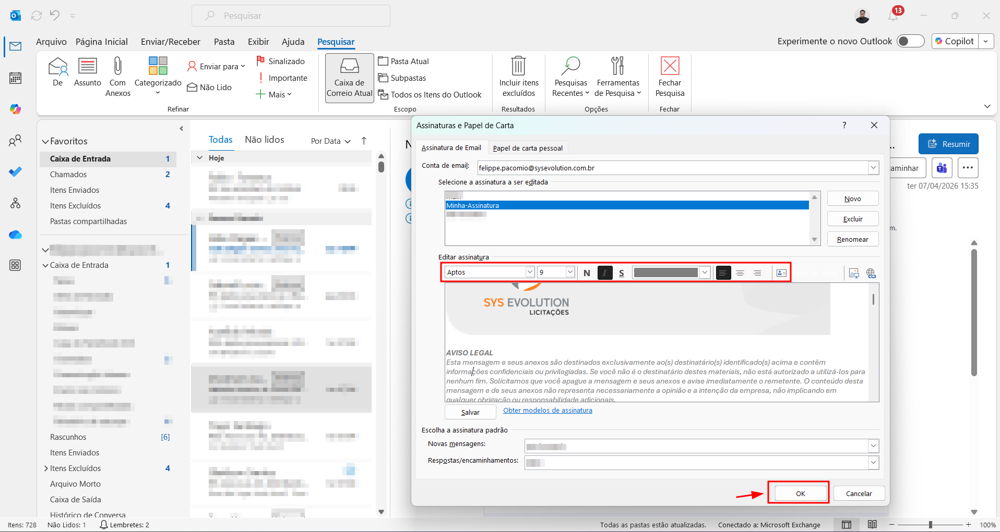
Assinatura configurada no Outlook Classic!
Sua assinatura está pronta no Outlook Classic. Se você também utiliza o Novo Outlook, siga os passos abaixo para configurar nele também.
Criar um novo e-mail no Novo Outlook
No Novo Outlook, clique em "Novo e-mail" para abrir o editor de mensagens.
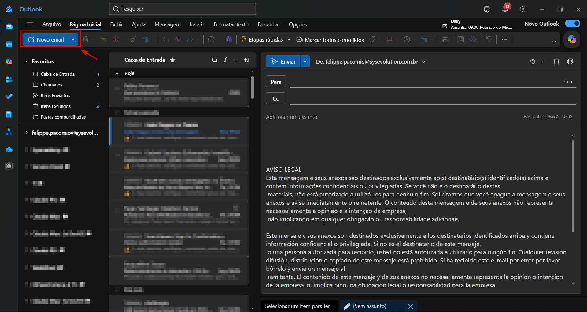
Acessar o ícone de assinaturas
No editor de e-mail, clique sobre o ícone de assinaturas na barra de ferramentas.
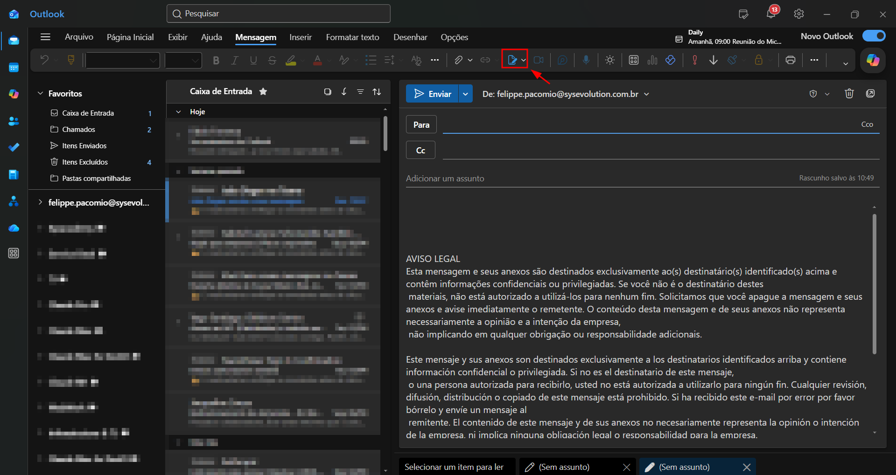
Abrir as configurações de Assinatura
No menu que aparecer, clique em "Assinaturas..." para abrir o painel de configuração.
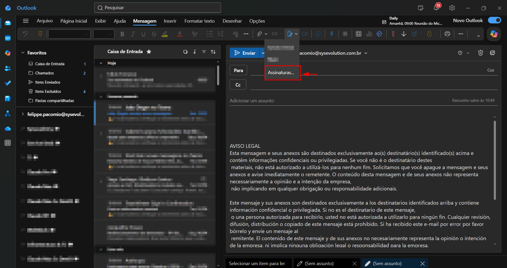
Adicionar uma nova assinatura
Na aba de assinaturas, clique em "Adicionar assinatura".
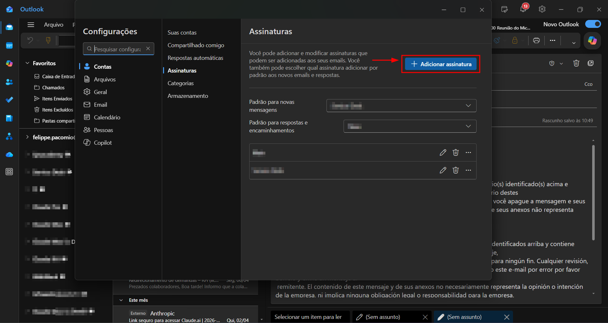
Nomear a assinatura
Insira um nome para a assinatura e clique em "Inserir".
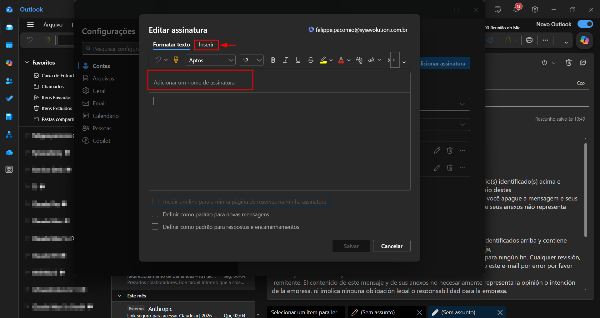
Inserir a imagem e o aviso legal
Clique em "Fotos" e selecione a imagem da sua assinatura. Em seguida, cole o texto do aviso legal com a mesma formatação descrita no Passo 9.
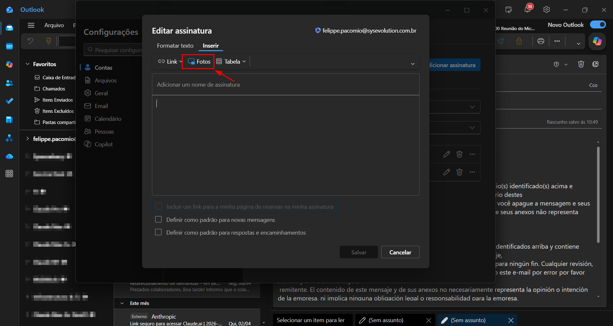
Salvar a assinatura
Clique em "Salvar" para concluir a configuração da assinatura no Novo Outlook.
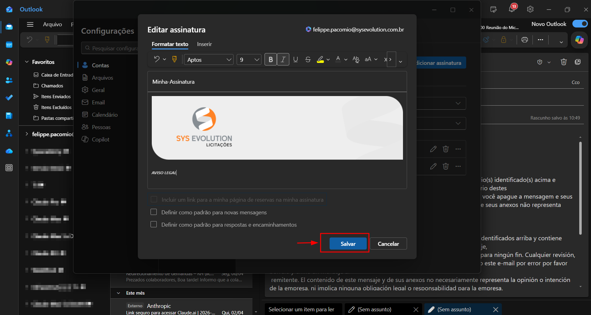
Pronto!
Sua assinatura de e-mail corporativa está configurada. Ela será adicionada automaticamente em todos os novos e-mails que você enviar.
📋 Observações
Em caso de dúvidas ou problemas durante o processo, entre em contato
com a equipe de Service Desk nos canais:


Também estamos disponíveis no Microsoft Teams.